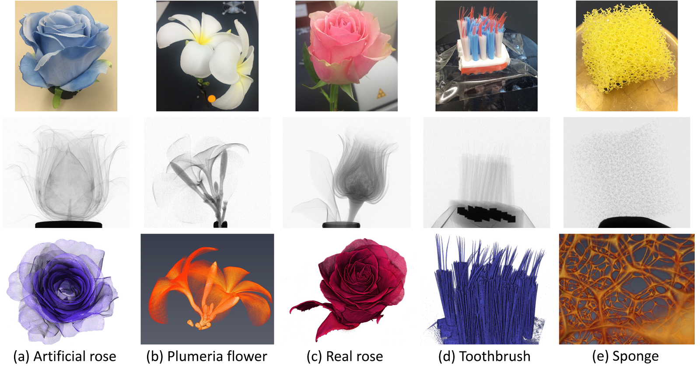

Super-Resolution and Sparse View
CT Reconstruction
Guangming Zang, Mohamed Aly, Ramzi Idoughi, Peter Wonka, Wolfgang Heidrich
ECCV, 2018

Five datasets with thin 2D (a-c) and 1D (d-e) structures embedded in 3D volumes. Top row: scanned objects. Middle row: representative projection images. Bottom row: rendering results of volumes reconstructed by our method.
Abstract
We present a flexible framework for robust computed tomography (CT)
reconstruction with a specific emphasis on recovering thin 1D and 2D
manifolds embedded in 3D volumes. To reconstruct such structures at
resolutions below the Nyquist limit of the CT image sensor, we devise
a new 3D structure tensor prior, which can be incorporated as a
regularizer into more traditional proximal optimization methods for CT
reconstruction. As a second, smaller contribution, we also show that
when using such a proximal reconstruction framework, it is beneficial
to employ the Simultaneous Algebraic Reconstruction Technique (SART)
instead of the commonly used Conjugate Gradient (CG) method in the
solution of the data term proximal operator. We show empirically that
CG often does not converge to the global optimum for tomography
problem even though the underlying problem is convex. We demonstrate
that using SART provides better reconstruction results in sparse-view
settings using fewer projection images. We provide extensive
experimental results for both contributions on both simulated and real
data. Moreover, our code will also be made publicly available.
Paper [Full text (~7.9MB)]
Supplementary [supplement file (~3.31MB)]